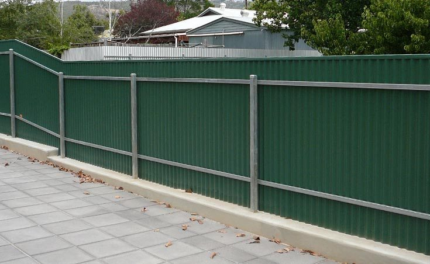

Post And Rail

Post And Rail
The posts and rails are mass produced due to the popularity of post and rail fencing across Adelaide and the installation is quick and easy to complete, especially for experienced fencing installers that have all the right equipment, including powered post hole diggers that make digging holes into the hardest ground a breeze.
Types
- Post and Rail on Retaining Wall
- Post and Rail on Concrete Plinth
- Sloping Post and Rail